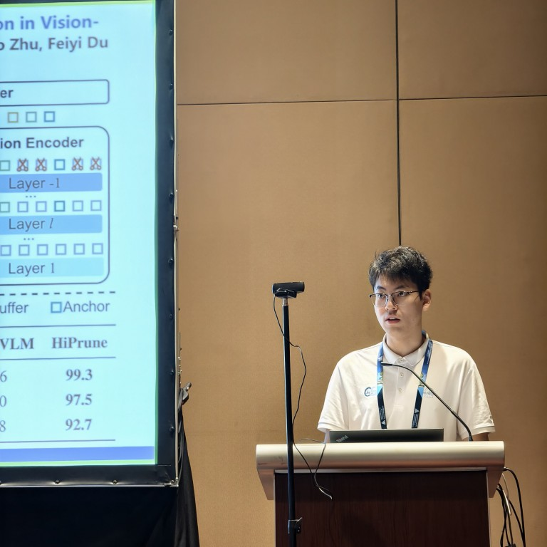

Harbin Institute of Technology (HIT)
Sep. 2023 - Jun. 2027B.Eng. in Artificial Intelligence Academician Class, School of Future Technology (Intro)
Undergraduate Student @ Harbin Institute of Technology, Shenzhen

I am a currently an undergraduate student (2023.09 - 2027.06) at the Artificial Intelligence Academician Class, School of Future Technology, Harbin Institute of Technology (HIT). My research interests primarily lie in Embodied AI and Multimodal Large Language Models (MLLMs), with a focus on vision-language models, inference acceleration, and robotic manipulation.
B.Eng. in Artificial Intelligence Academician Class, School of Future Technology (Intro)
* Equal contribution, † Corresponding author
Research Intern | Advisor: Rui Shao
Project Leader | Advisors: Bin Chen, Yaowei Wang
Project Leader | Advisor: Junjun Jiang
Singapore
Oral and Poster Presentation for Student Abstract and Poster Program
Singapore
Generative AI for Data Analytics: Unleashing Insights with ChatGPT